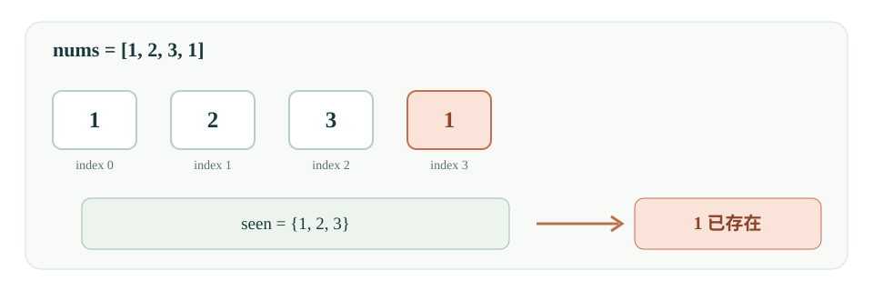
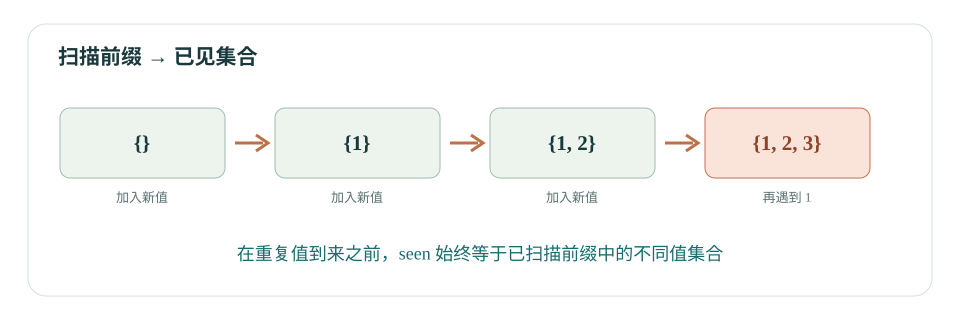
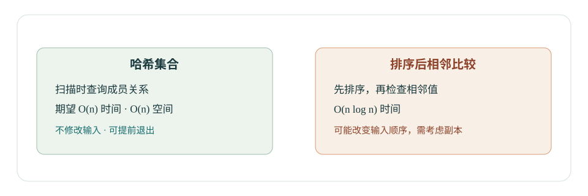

LEETCODE 217 / EASY / ARRAYS & HASHING
LeetCode 217 · 存在重复元素
一个集合就够了：扫描前缀如何发现第一次碰撞？
简单 Easy10 分钟Hash Set01 · 题意与直觉
给定整数数组 nums，只需要判断是否存在某个值出现至少两次：有重复就返回 true；所有元素都不同则返回 false。
朴素办法
比较每一对元素，时间 O(n²)。另一种思路是排序后检查相邻元素，时间 O(n log n)，但排序可能改变输入顺序。
这里不需要知道重复值出现了几次，也不需要它的下标；我们只关心“这个值之前是否出现过”。因此，集合 set 比字典 dict 更贴切。

02 · 集合不变量：seen 代表已扫描前缀
循环不变量
开始处理下标 i 之前，seen 等于 nums[0:i] 中所有不同值构成的集合。若当前值已在 seen 中，说明它至少在更早的位置出现过。
每轮只需两步：先检查 value 是否属于 seen；若不属于，再把它加入集合。重复一旦出现就可以提前退出，不必继续扫描。

03 · 逐步执行
用 [1, 2, 3, 1] 演示。每次遇到新值就加入集合；当再次遇到 1 时，集合查询立即发现重复。
执行轨迹 · Contains Duplicate步骤 1 / 4
01122331
i=0：seen 为空，1 不在集合中。将 1 加入 seen。
seen={1} · no duplicate
04 · 正确性证明
如果算法返回 true，它一定是在处理某个 value 时发现 value 已经属于 seen。根据不变量，seen 中的这个值来自更早的下标，因此数组中确实存在两个不同位置拥有相同值。
反过来，假设数组存在重复值，取它第一次重复出现的位置 j。第一次出现的位置小于 j，处理 j 之前已经被加入 seen；所以处理 j 时一定命中并返回 true。若整个扫描没有命中，则不存在重复值，返回 false 正确。
05 · Python 参考实现
class Solution:
def containsDuplicate(self, nums: list[int]) -> bool:
seen: set[int] = set()
for value in nums:
if value in seen:
return True
seen.add(value)
return False
| 维度 | 哈希集合 | 排序后比较 |
|---|---|---|
| 时间 | 期望 O(n) | O(n log n) |
| 额外空间 | O(n) | 取决于排序实现与是否复制输入 |
| 输入 | 不修改 | 原地排序会改变顺序 |
| 提前退出 | 发现第一个重复值即可 | 通常先完成排序 |
哈希集合的时间结论依赖平均/期望常数时间的成员查询；若空间非常紧张且允许改变顺序，可以考虑排序方案。
06 · 方案取舍与迁移

- 只需要回答“出现过吗”：用 set。
- 需要把值映射到下标或计数：用 dict。
- 需要按频次做进一步判断：将 set 升级为计数字典。
- 空间限制严格且允许改变顺序：比较排序后相邻元素的方案。